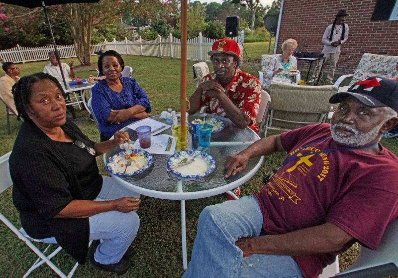
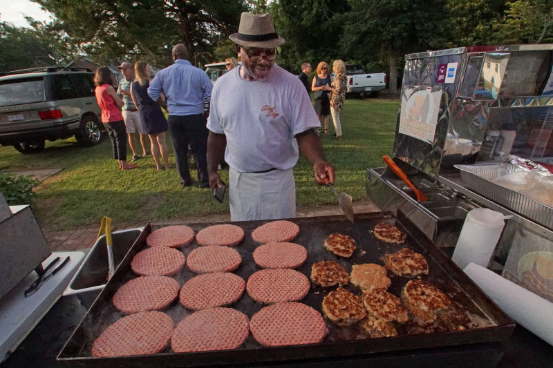
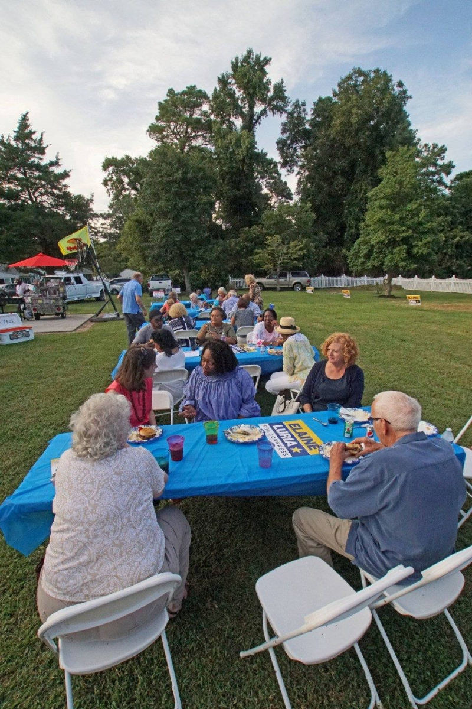
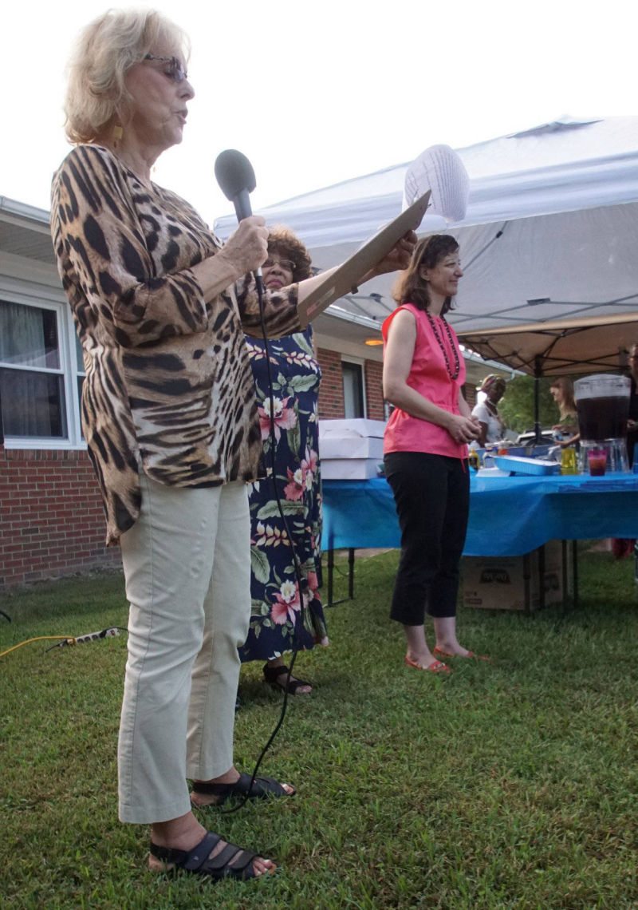

Accomack County & Northampton County Democratic Committees
September 2018
The Accomack County Democratic Committee Sept. 5 meeting was very well attended and there was much spirited discussion and planning.
Bob Toner from the NCDC gave a special report of outreach and voter registration efforts. He especially emphasized a non-partisan Voter Registration Rally on Sept. 15th at the Eastern Shore Community College in Melfa. It will run from 9:00 am to 5:30 pm. Volunteers are needed. Contact Bob Toner at mbtoner@verizon.net, or 757-442-2676 to volunteer.
Charles Kelly reported on the new website and newsletter. Both counties are now able to accept online memberships/dues and donations online via Democratic non-profit ActBlue.org.
ACDC nominated and voted for Lisa LaMontagne as our new 3rd Vice Chair. She will head up our Programs & Project Development efforts. Welcome aboard Lisa!
Paul & Jane Berge reported on the independent bi-county group they are heading that is planning a large old-time rally at Mary N. Smith School on Oct. 27th from 11 am to 2 pm. Plans have been finalized for music, food, fellowship and speeches from Gov. Ralph Northam, Elaine Luria and others to be announced later.
Please see the important info further down in the newsletter about absentee balloting dates, deadlines and procedures.
The Coordinated Campaign Office located in the Edward Jones Building at 4045 Lankford Hwy., Exmore, VA 23350 will be opening on Sept. 15. The office needs volunteers to make phone calls, door-to-door canvassing and other tasks. There will be a limited number of Luria & Kaine yard signs available. Contact Parker Dooley for more information at pdooley23410@gmail.com.
The "Final 4" is coming. The ACDC Cwill be making a special push during the last 4 days (Nov. 3-6) leading up to and including election day. They have rented space at the Historic Onancock School, 6 College Ave, Onancock, VA 23417. There will also be a North Accomack County "Final 4" location at Debra Wharton's house in Temperanceville, VA. Both locations will be busy doing canvassing, door knocking and providing transportation to the polls. For more info about Onancock contact Al McKegg at almckegg@gmail.com or for Temperanceville contact Debra Wharton at dwhartonescsb@yahoo.com.
We have new information about our future meetings in Oct. and Nov.
The Oct. 3rd general meeting will feature Patty White, Accomack County Registrar to answer all your questions about voting in Accomack County. Don't miss this very special guest and meeting.
The Nov. meeting date has changed. It will be held on Nov. 1st at the usual ES Chamber of Commerce Bldg. in Melfa.
The Northampton County Democratic Committee Sept. 4, 2018 meeting kicked off with a brief report from Hannah Harrighi with the Elaine Luria campaign who will be sending a full-time staffer to assist 2 other full-time staffers and local volunteers in the operation of the Coordinated Campaign Office.
The Coordinated Campaign Office, opening on Sept. 15, will be in the Edward Jones Building at 4045 Lankford Hwy., Exmore, VA 23350. The office needs volunteers to make phone calls, door-to-door canvassing and other tasks. There will be a limited number of Luria & Kaine yard signs available. Contact Linda Schulz at llschulz1@aol.com.
Bob Toner talked about several upcoming voter registration events. There will be a
non-partisan Voter Registration event at the Eastern Shore Community College on Mon. Sept. 17. There will also be several others at community events in Exmore and other locations. Contact Bob Toner at mbtoner@verizon.net, or 757-442-2676 for information or to volunteer.
Bill Payne reported on Precinct Operations. Volunteers are needed to staff outside candidate information tables and staffers are needed in the district polling sites to help ensure fairness in the voting process. Contact Bill Payne at payne1942@msn.com for more information or to volunteer.
Be sure to make plans to come to our Oct. 2nd meeting! It will be a very important meeting as we make plans and get ready for election day.
Saturday, August 25th was a big day for members of the Northampton County Democratic Committee. They co-hosted a well-attended Meet and Greet with Elaine Luria, Democratic candidate for the 2nd Congressional District. The event was a smashing success!
More than 60 people come out to Joanne Fitchett's backyard in Cheriton to meet Elaine, eat some great food and enjoy some smooooth music. We all even danced the Electric Slide, Including Elaine. The energy and enthusiasm were high. We recruited a number of potential new volunteers.
Earlier in the day, Elaine was escorted to three local businesses - Eastern Shore Rural Health/Bayview Community Health Center, the Cape Charles Coffee House and Cape Charles Vacation Rentals/Destination 23310, so that she could hear from local business owners about their concerns and issues.
This year women veterans are running for office in states all over the country, including Virginia, Kentucky, New Hampshire and Texas. On the East Coast, Navy veteran Democrat Elaine Luria, is challenging Republican Rep. Scott Taylor, a former Navy SEAL, to represent the area of Norfolk, Virginia, which has a large military presence.
She said public service, like military work, is about "getting a mission done," not the political affiliations of those doing the job.
“I'm sitting in the central control station; we're operating eight nuclear reactors, and I don't turn to one of the sailors next to me and say, ‘Are you a Democrat or Republican?’” Luria told Raddatz.
ABSENTEE VOTING BY MAIL In order to vote Absentee By Mail you have to apply to receive a ballot. You can get an application here to mail in or you can apply online here. Applications must be received by 5:00 pm the Tuesday before the election. Your completed ballot must be received by 7:00 pm on Election Day. You can find a list of offices here.
ABSENTEE VOTING IN PERSON Absentee voting in person voting is available starting 45 days before the election and will ends 3 days before the election. Your local registrar’s office will have Absentee In Person voting during their office hours and some offices will also have satellite voting locations. You can check the schedule by calling your local registrar’s office, a list of offices here, or by visiting their website.
We are searching in both counties for interested Young Democrats to startup an indepentently chartered Eastern Shore VA Young Democrats group - high school students, college students or working young adults under 35 years old are all eligible. Do you know any young locals with an interest in politics? If so, please share their names and email addresses with us.. Send an email to ckelly@easternshoredemocrats.com for more information.
The Virginia Young Democrats (VAYD) is the official youth auxiliary of the Democratic Party of Virginia. Membership in the VAYD, through your chartered club, gives you an official voice in Virginia Democratic politics.
Mary "Mama Girl" Onley, the beloved Eastern Shore of Virginia folk artist, died Saturday, August 19, 2018, after an illness.
Mary Onley, 64, of Painter, was known for her papier-mache sculptures and colorful paintings. Her works are in many private collections, in addition to a permanent collection at the American Visionary Arts Museum in Baltimore.
As news of her death spread, art lovers began posting photographs of her works with messages of remembrance on social media, including on her professional Facebook page, Mama-Girl FolkArt.
Onley started making her distinctive style of art more than a quarter-century ago, after a series of seizures and a diagnosis of severe allergies caused her to stop working in the fields of the Eastern Shore — she had done fieldwork for more than 22 years before that, since the age of 12, according to a 2016 article in the Eastern Shore News.
Looking for a new vocation, Onley began experimenting with a variant of papier-mache using strips of newspaper, Elmer's glue and acrylic paint.
Onley, who also was a pastor, said she called for guidance on the Spirit — the voice of God that would speak to her when she began working on a new piece of art.
"I said good Lord, give me something nobody's never done. Show me how to work this newspaper and glue," she said. "The Spirit showed me how to work the newspaper and glue and I started right from there, you know."
Mama Girl created her art in her home studio on a back road in Painter. She became well-known in the folk art community, often traveling to festivals and teaching classes.
Speaking about Onley's art, "It has a soul to it," said Hampton Roads, Virginia, artist and restaurateur Sydney Meers in an episode of Curate757 that aired earlier this year on PBS.
Onley's grandson, Malcolm White, in February presented two American flag pins she had made to Gov. Ralph Northam and his wife at a gala in Onancock, during Northam's first official visit to the Eastern Shore after he was elected governor.

Never underestimate the influence you have in your community! Be sure to tweet, share and post about what is happening in the news and why you are excited to be a part of the #BlueWave
Here are some ideas to help you spread the word!
You can utilize simple get-out-the-vote scripts (email and phone) to customize and send reminders to your social networks, people you’ve helped register, and other contacts. Research shows that sending these reminders are most effective in the final week or few days leading up to Election Day, so it’s a good idea to start planning your outreach now.
Subject Line: Important Information before you Vote
(best if sent personally and/or in a mail merge with at least the first name of the recipient customized).
Hi [NAME],
Election Day is almost here! Are you ready to vote?
You may remember that we helped you register to vote at [venue/your school] back in [September/October]. Now we’re reaching out to share some important tips for Election Day.
This election is important, and it is your chance to take control for your community and weigh in on the issues that matter most to you and your family. As voters, we all have an equal say in determining our future. That’s why it is so important to go cast a vote!
Here are a few important tips:
Please visit www.VOTE411.org and enter your address to find helpful information about voting in our community, including [candidate information, if your League has it available on VOTE411].
On Election Day, polling places are open in from XX am to XX pm.
[IF required in your state ]At the polls, you’ll be required to show [an ID/utility bill/etc. ].
The leaders we elect will make decisions that affect your everyday life — your job, health care, energy costs, the economy and more. So don't sit this one out — join your friends and neighbors and make it count on [Election Date]!
If we can help answer any questions you have about the election process, please feel free to contact us at [CONTACT INFO]
Thank you for voting!
YOUR NAME
YOUR ORG NAME
Hello, is [VOTER NAME] there?
Hi! This is [CALLER NAME] calling from the League of Women Voters of XX.
We helped you register to vote at [venue/your school] back in [month].
We wanted to thank you again for registering and wanted to remind you about the election on [Tuesday , Month, Date].
Can we count on you to go vote on [Election Date]?
IF YES:
Great! We’ve been calling other voters and it sounds like a lot of people in [COMMUNITY] will be voting this year. It’s an important election, and we’re so excited that you’ll have the chance to stand up for our community by casting a vote.
Can I remind you of your polling place [you can look it up on VOTE411.org]?
Do you know when you might go to vote on Tuesday? In the morning, afternoon, evening? Do you have a plan for getting there?
IF NO/MAYBE:
OK, what other information can I provide to you to help make voting a little easier? I’d be happy to look up your polling place for you [on VOTE411.org] or tell you a little more about what to expect at the polls [have polling place hours, required ID info handy].
Can I answer any questions about voting?
Great! Again, thank you for your promise to vote this year.
The last major primary night before the November election packed a major surprise: Tallahassee Mayor Andrew Gillum edged out former Rep. Gwen Graham to capture the Florida Democratic gubernatorial nomination, taking a major step toward being Florida's first black governor.
Gillum's victory -- particularly in a state as crucial to the presidential primary and general election process -- has lessons in it for any ambitious Democrat trying to understand the mentality and beliefs of the party base heading into 2020. Here are five.
1. You can't be too liberal. Gillum was, without question, the choice of liberals in this race. Wealthy California businessman Tom Steyer, who has run ads nationally calling for President Donald Trump to be impeached, was an early supporter of Gillum's. So, too, were George Soros and Vermont democratic socialist Sen. Bernie Sanders. Gillum ran as an unapologetic progressive, advocating for single-payer health insurance and calling for Trump's impeachment.
2. Younger is better. The Democratic Party base badly wants fresh faces. Its top three House leaders are all in their mid- to late-70s. The two most recognizable names in the 2020 sweepstakes at the moment -- Sanders and former Vice President Joe Biden -- are 76 and 75, respectively. At 39, Gillum represents a younger generation of leaders, willing to go bold rather than bland on policy and unbound by the conventional wisdom of "how to win" that hold back many older politicians. While the 2020 top tier may begin as Biden, Sanders and Massachusetts Sen. Elizabeth Warren (age 69), there appears to be significant room for younger candidates to emerge.
3. Black candidates are winning. Gillum's victory is the third major victory for a black Democrat in a Democratic gubernatorial primary field in 2018, following on the heels of wins by former NAACP president Ben Jealous in Maryland earlier this year and state Rep. Stacey Abrams in Georgia. Gillum and Jealous both emerged from crowded primaries, while Abrams crushed fellow state legislator Stacey Evans, a white woman, in a one-on-one primary race.
None of that winning trio ran expressly as the "black" candidate in the field. (In Jealous' case, his leading opponent -- Rushern Baker -- was also black.) And all three demonstrated an ability to win votes outside of the African-American base within the Democratic Party.
But their victories serve as a reminder of how potent the black vote is within the current incarnation of the Democratic Party. And how the likes of Sens. Kamala Harris (Calif.) and Cory Booker (N.J.) or former Massachusetts Gov. Deval Patrick could benefit from that fact come 2020.
4. Voters still love a powerful personal story. Gillum's background was compelling to voters, and he spoke of it often on the campaign trail. Here's the New Yorker's Benjamin Wallace-Wells on Gillum's life story:
"Last Sunday, Gillum spoke at St. Ruth Missionary Baptist Church, in Dania Beach, Florida. I was in a pew near the back. Over six feet tall, with a shaved head and handsome, Gillum took the pulpit and told the congregation about his life. He was born poor, in Miami. His mother was a school-bus driver and his father was a construction laborer. He was the fifth of seven children, and the first to graduate from high school."
In one of his only campaign ads, Gillum turns to the camera and asks: "What's impossible? The son of a bus driver becoming mayor of the capital city? Is it impossible to come from nothing, be outspent 10-to-1 and win?" (In a longer digital-only ad, Gillum tells his personal story in a deeply compelling way.)
Time after time after time, voters remind us that they reward candidates who have powerful personal narratives that they tell in ways that touch people. Voters vote for a person much more than they vote for a series of policy positions.
5. Money matters less than you think. One of the last vestiges of the old way of thinking about and analyzing politics is that fundraising power is determinative. It isn't. Gillum was drastically outspent by not only Graham but several self-funded candidates in the Florida race -- and still won. (Worth noting: Gillum did have financial support from both Steyer and Soros, which helped narrow the campaign spending gap somewhat.)
Money doesn't make up for message. Money isn't a stand-in for genuine grassroots energy -- and can't purchase it either. There remains a fundraising threshold below which a candidate can't possibly hope to be competitive -- people need to know who you are before they go into the voting booth -- but that threshold is far lower than many establishment types believe it to be.
Andrew Gillum may be be exactly what the Democratic Party needs - a young, progressive man of the people.

Access the Virginia Department of Elections website to register to vote online, to review your current voter registration status, and/or submit updates to your voter registration.
© 2018 Eastern Shore Democrats - All Rights Reserved
Authorized and paid for by the Accomack County and Northampton County Democratic Committees